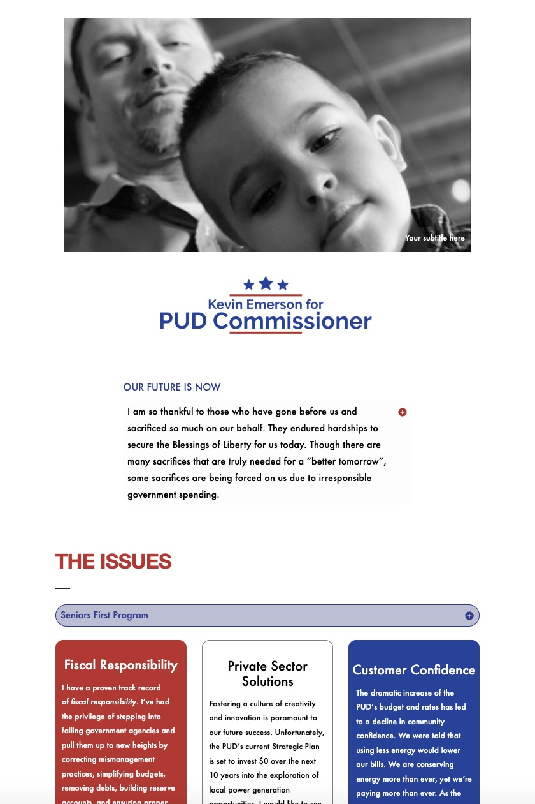

Political Campaign Website
A campaign identity carried from a commissioner’s wordmark into a voter-facing website.

For Kevin Emerson’s PUD Commissioner campaign, I worked on the identity and website. The candidate introduction and issue cards were two key parts of the page.
This presentation uses the archived website capture. The full page is available below.

